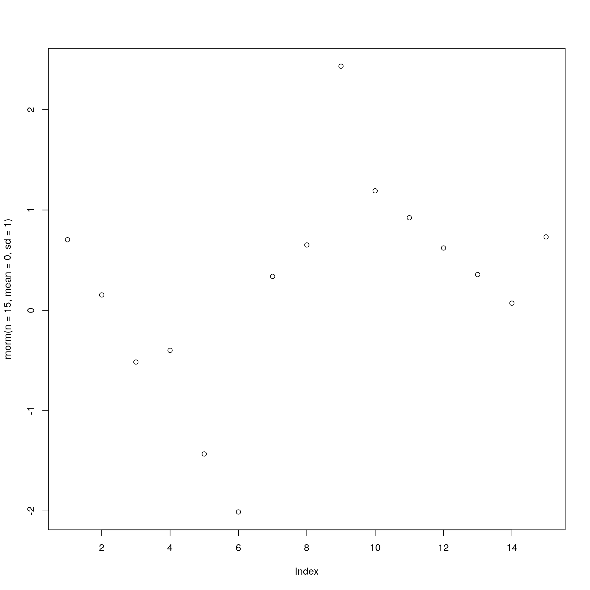
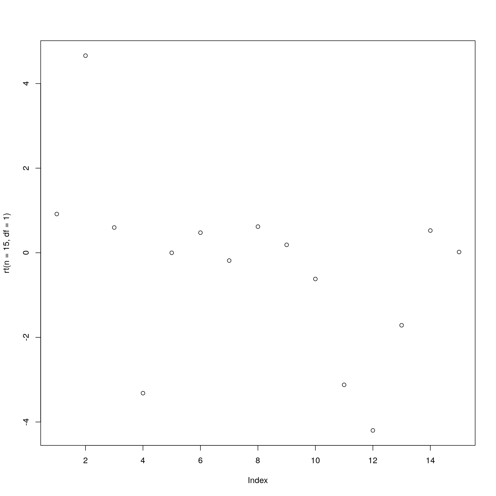
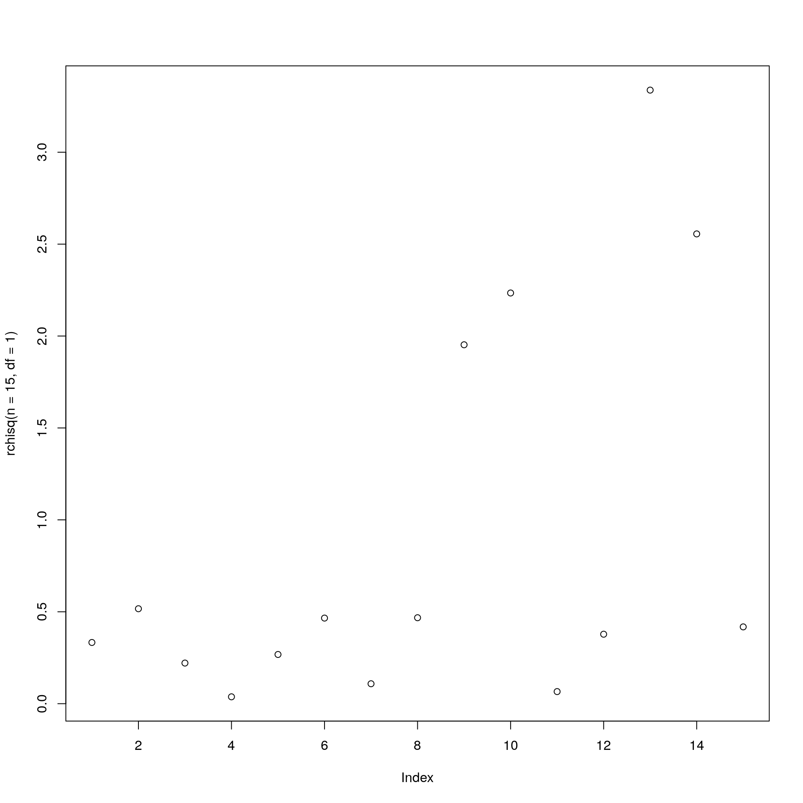
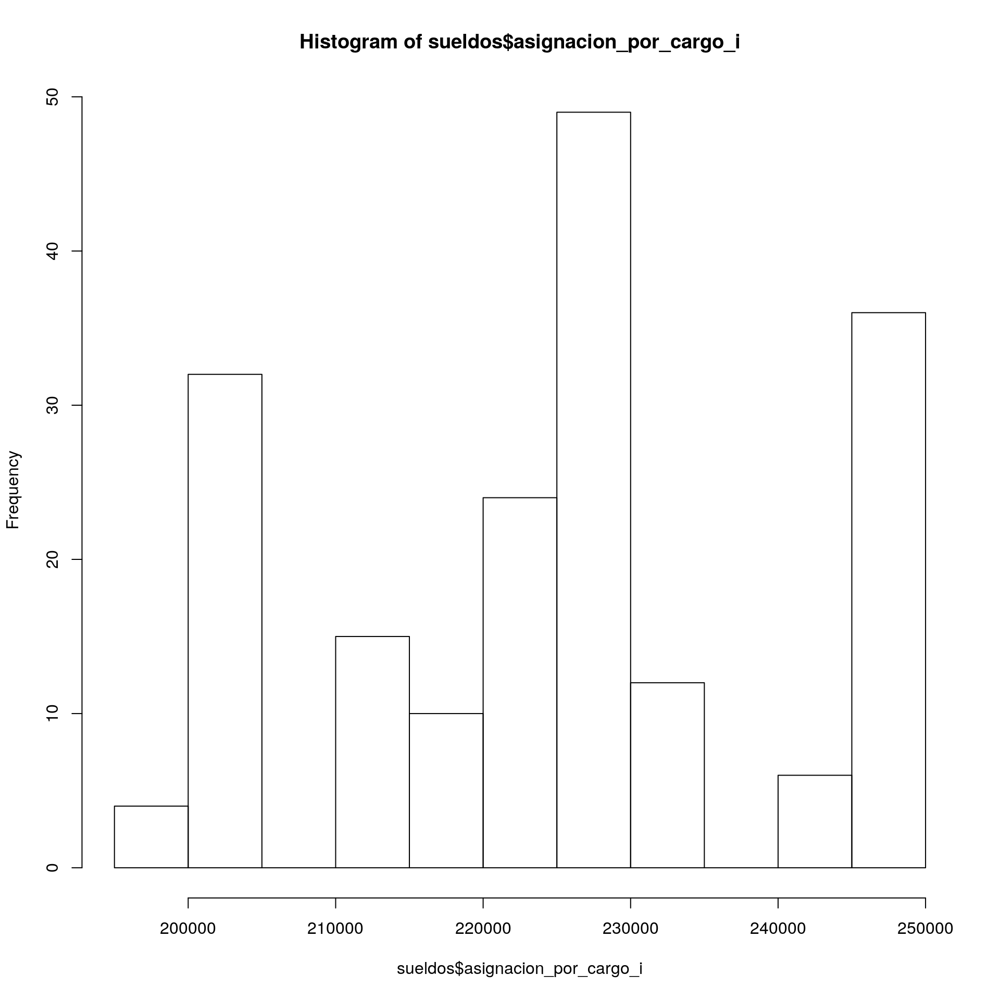
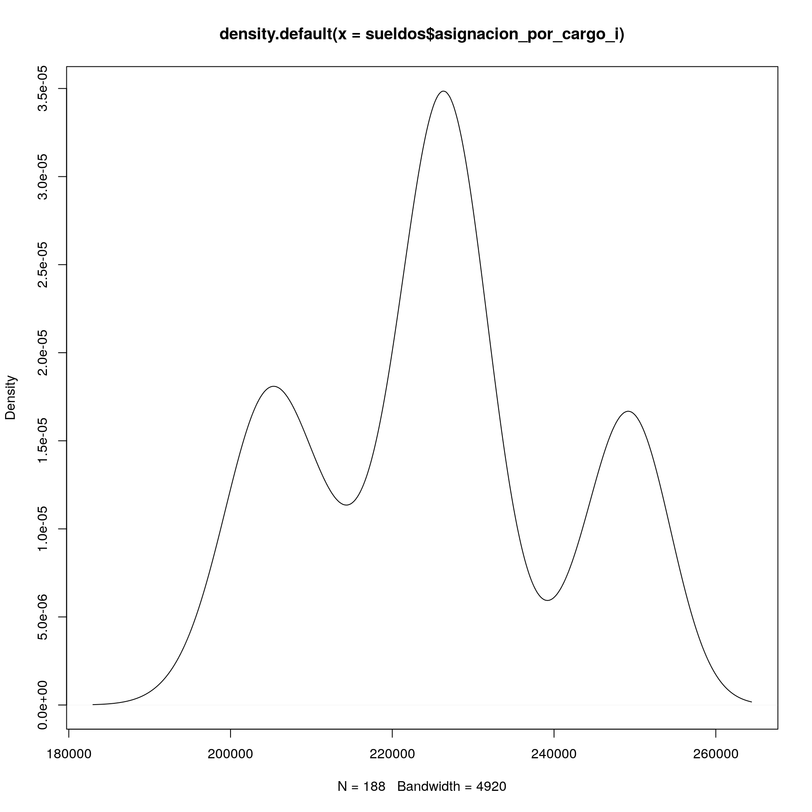

3.2 Práctica Guiada
library(tidyverse)3.2.1 Generación de datos aleatorios
Para generar datos aleatorios, usamos las funciones:
rnormpara generar datos que surgen de una distribución normalrtpara generar datos que surgen de una distribución T-studentrchisqpara generar datos que surgen de una distribución Chi cuadrado
Pero antes, tenemos que fijar la semilla para que los datos sean reproducibles
set.seed(1234)
rnorm(n = 15, mean = 0, sd = 1 )## [1] -1.20706575 0.27742924 1.08444118 -2.34569770 0.42912469
## [6] 0.50605589 -0.57473996 -0.54663186 -0.56445200 -0.89003783
## [11] -0.47719270 -0.99838644 -0.77625389 0.06445882 0.95949406rt(n = 15, df=1 )## [1] -0.363717710 -1.603466805 -0.388596796 -0.588007490 0.007839245
## [6] 14.690527710 -1.863488555 0.022667470 -2.084247299 -0.249237745
## [11] -1.311594174 -3.569055208 -2.490838240 -3.848779244 -4.271087169rchisq(n = 15,df=1)## [1] 0.5317744 1.4263809 4.2797098 0.2184660 0.6923773 0.0455256 3.1902100
## [8] 0.2949942 0.5403827 0.1543732 0.8639196 0.1417290 1.1386091 0.2966193
## [15] 0.5110879Para poder ver rápidamente de qué se tratan los valores, podemos usar el comando plot
plot(rnorm(n = 15,mean = 0, sd = 1 ))
plot(rt(n = 15,df=1 ))
plot(rchisq(n = 15,df=1))
Noten que el eje X es el índice de los valores, es decir que no agrega información.
3.2.2 Tests
Utilicemos ahora datos reales.
Los datos salen de https://data.buenosaires.gob.ar/dataset/femicidios
Vamos a ver ahora las estadisticas de Buenos Aires sobre la cantidad de femicidios por grupo etario. Es interesante preguntarse si hay más femicidios para cierto rango etario.
femicidios <- read_csv(file = '../fuentes/vict_fem_annio__g_edad_limpio.csv')
femicidios## # A tibble: 19 x 3
## anio cantidad_femicidios grupo_edad
## <dbl> <chr> <chr>
## 1 2015 1 0 - 15
## 2 2015 2 16 - 20
## 3 2015 5 21 - 40
## 4 2015 3 41 - 60
## 5 2015 - 61 y más
## 6 2015 1 Ignorado
## 7 2016 2 0 - 15
## 8 2016 3 16 - 20
## 9 2016 4 21 - 40
## 10 2016 1 41 - 60
## 11 2016 2 61 y más
## 12 2016 2 Ignorado
## 13 2017 … 0 - 15
## 14 2017 … 16 - 20
## 15 2017 … 21 - 40
## 16 2017 … 41 - 60
## 17 2017 … 61 y más
## 18 2017 … Ignorado
## 19 2017 9 TOTALFijense que las estadísitcas no están desagregadas por rango etario para 2017, que en caso de que haya 0 femicidios pusieron ‘-’ en lugar de 0. Además, como tenemos pocos datos, es mejor hacer un test que compare sólamente dos grupos.
Vamos a reorganizar la información para corregir todas estas cosas
femicidios <- femicidios %>%
filter(anio!=2017, grupo_edad !='Ignorado') %>% #Sacamos al 2017 y los casos donde se ignora la edad
mutate(cantidad_femicidios = case_when(cantidad_femicidios=='-' ~ 0, # reemplazamos el - por 0
TRUE ~as.numeric(cantidad_femicidios)), # y convertimos la variable en numerica
grupo_edad = case_when(grupo_edad %in% c('0 - 15','16 - 20','21 - 40') ~ '0-40', # agrupamos para tener sólo dos grupos
grupo_edad %in% c('41 - 60','61 y más') ~ '41 y más')) %>%
group_by(grupo_edad) %>%
summarise(cantidad_femicidios= sum(cantidad_femicidios)) # sumamos los años y grupos para tener datos agregados
femicidios## # A tibble: 2 x 2
## grupo_edad cantidad_femicidios
## <chr> <dbl>
## 1 0-40 17
## 2 41 y más 6Con esta tabla de contingencia podemos hacer un test de hipótesis.
¿Cuál usamos? Nos fijamos en el machete, o googleamos, y vemos que como queremos comparar la cantidad de casos por grupos categóricos, tenemos que usar el test Chi.
- \(H_0\) No hay asociación entre las variables
- \(H_1\) Hay asociación entre las variables
La idea es que tenemos dos variables: El rango etario y la cantidad de femicidios
chisq.test(femicidios$cantidad_femicidios)##
## Chi-squared test for given probabilities
##
## data: femicidios$cantidad_femicidios
## X-squared = 5.2609, df = 1, p-value = 0.02181Noten que el resultado lo dan en términos del p-valor. Como el valor es bajo, menor a 0.05, entonces podemos rechazar que no existe relación. O en otros términos, pareciera que la diferencia es significativa estadísticamente.
3.2.3 Descripción estadística de los datos
Volveremos a ver los datos de sueldos de funcionarios
sueldos <- read_csv('../fuentes/sueldo_funcionarios_2019.csv')Con el comando summary podemos ver algunos de los principales estadísticos de resumen
summary(sueldos$asignacion_por_cargo_i)## Min. 1st Qu. Median Mean 3rd Qu. Max.
## 197746 210061 226866 225401 231168 2496623.2.4 Gráficos estadísticos
No nos vamos a detener demasiado a ver cómo hacer los gráficos de resumen, porque la próxima clase veremos como realizar gráficos de mejor calidad, como los presentados en las notas de clase.
A modo de ejemplo, dejamos los comandos de R base para realizar gráficos.
boxplot(sueldos$asignacion_por_cargo_i)
hist(sueldos$asignacion_por_cargo_i)
plot(density(sueldos$asignacion_por_cargo_i))